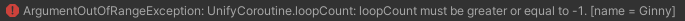

Looping a Unify Coroutine
Unify Coroutines provide a loopCount property to specify the number times the Coroutine should be executed. To loop execution of a Unify Coroutine infinitely, set loopCount to -1.
To enable this functionality, either the loopCount property or the keepAlive property must be initialised before starting the Unify Coroutine for the first time.
Unify Coroutines also provide a loopDelay property to allow a delay between each pass of the loop.
The loopCount and loopDelay properties can be set in two ways:
Set the loopCount and/or loopDelay properties directly:
myUnifyCoroutine.loopCount = 3;
myUnifyCoroutine.loopDelay = 1.5f; // 1.5 seconds
Pass loopCount and/or loopDelay as parameters to the constructor:
myUnifyCoroutine = new UnifyCoroutine(CountToTen(), loopCount:3, loopDelay:1.5f);
Example
This example counts from 1 to 10, printing the current value to the Unity Console every 0.25 seconds. This is looped 3 times with a 2 second delay between each execution.
Here, the loopCount and loopDelay properties are initialised via the Unify Coroutine constructor.
Also, keepAlive has been set to true to allow restarting and failSilently
has been set to false to allow you to trigger exceptions as described below.
Attach the script below to a GameObject and press:
- S to Start the Unify Coroutine
using System.Collections;
using Unify.Coroutines;
using UnityEngine;
public class Loop : MonoBehaviour
{
private UnifyCoroutine myUnifyCoroutine;
void Start()
{
myUnifyCoroutine = new UnifyCoroutine(CountToTen(), loopCount:3, loopDelay:2f);
myUnifyCoroutine.keepAlive = true;
myUnifyCoroutine.failSilently = false;
}
void Update()
{
if (Input.GetKeyUp(KeyCode.S))
{
print("* Starting Unify Coroutine *");
myUnifyCoroutine.Start();
}
}
private IEnumerator CountToTen()
{
for (int i = 1; i <= 10; i++)
{
print($"counting... {i}");
yield return new WaitForSecondsRealtime(0.25f);
}
}
}
Exceptions
Exceptions will be thrown under the following circumstances:
- Setting the loopCount property to a value of greater than 1 or to a value of -1 (infinite looping), after the Unify Coroutine has been started for the first time
- Setting the loopCount property to a value of less than -1
- Setting the loopDelay property to a value of less than zero
- Setting the keepAlive property to true, after the Unify Coroutine has been started for the first time
Exceptions will not be thrown if failSilently is true.
Unify will provide information in the exception message to help you find the cause of the error, for example:

This message tells us the firstRun flag is false, therefore we have tried to set either the loopCount property to a value other than 1, or change the value of the keepAlive property to true, after the Unify Coroutine had been started for the first time.